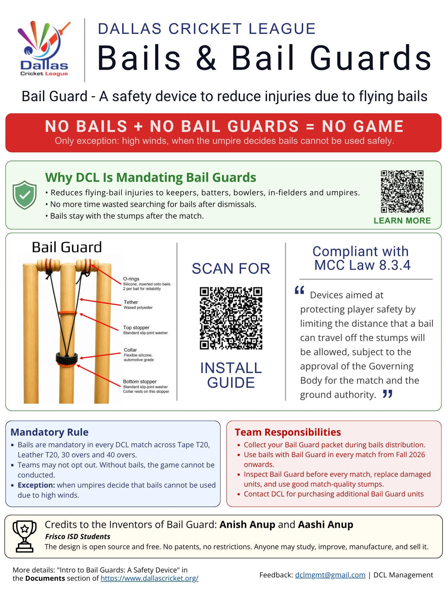
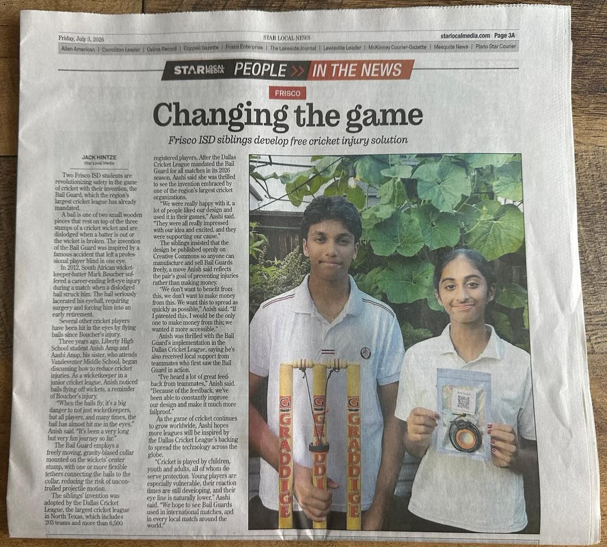

250 years of the wicket
The wicket we play with today is not the one cricket started with. It was redesigned the first time a bowler complained it was unfair, and it has been redesigned again whenever the game found a good enough reason. This is that story, and where ours joins it.
The first written Laws
Cricket's Laws are written down for the first time. The wicket is two stumps and a single bail, the stumps 22 inches high and the bail 6 inches across.
A bowler complains, and the wicket changes
At the Artillery Ground in London, Hambledon's John Small faces Kent's Edward “Lumpy” Stevens. Three times Stevens bowls the ball clean through the two stumps without dislodging the bail. The crowd judges it unfair to the bowler. A petition follows, and a third stump is added.
One year before the American Declaration of Independence.Three stumps, two bails
The third stump, and the second bail it requires, spread gradually rather than overnight. Two stump wickets carry on in places for years. The shape of the wicket we know today settles into the Laws.
Paul Downton loses depth perception
England's wicketkeeper is struck in the eye by a bail in a Sunday League match at Basingstoke. The impact partly shatters the lens in his left eye. The resulting loss of depth perception ends his career six weeks into the following season.
Mark Boucher's career ends in one delivery
A googly from Imran Tahir hits the stumps in a tour match at Taunton. A bail flies into Boucher's left eye. He loses the lens, iris and pupil, undergoes hours of surgery, and retires from international cricket immediately.
MS Dhoni's near miss
Dhoni is struck near the eye by a bail against Zimbabwe in Harare. Reports at the time call it a lucky escape. The pattern is now hard to ignore: the people closest to the stumps keep getting hit.
The MCC opens the door
The MCC amends the Laws of Cricket to permit devices that limit how far a bail can travel. Law 8.3.4 takes effect on 1 October 2017. For the first time, a bail tether is explicitly legal, subject to the approval of the governing body and the ground.
ESPNcricinfo: MCC amends Laws to protect wicketkeepers from flying bails
It starts in a backyard
Long before there is a publication, a league, or a single match, there is a fence, some dry winter grass and a phone propped on the ground. We start with bails tethered by a piece of string, then spend an afternoon trying out ideas that go past it. We keep coming back to this unsolved challenge over the next couple of years. The usage scenarios and the practical problems keep getting clearer.
We publish the design instead of patenting it
Aashi Anup and Anish Anup release the bail guard as a defensive publication on Zenodo, under a Creative Commons licence. Publishing it as prior art means nobody can patent the mechanism later and charge the game for it.

Into real matches
Grand Prairie Cricket Club (GPCC), an NTCA member club led by Mr Faisal Akthar, fits bail guards for the GPCC Winter Cup. Every device used is made by volunteers at All Stars Frisco Cricket Academy, under Mr Adi Kattari.
GPCC volunteers film every ball, from several angles and in excellent quality. That footage does what no amount of explaining could: the cricket community watches the device work, dismissal after dismissal, and judges it for itself.
The design changes twice in three weeks. A PVC collar shatters on a direct hit in the opening match and is replaced with automotive grade silicone. When a knot at the O-ring slips, the bail is tied straight to the tether with a scaffold knot instead. By the final, a second stopper sits below the collar so umpires can reset in seconds rather than chase bails to the ground.
Testing continues post tournament. High impact tests on a Bola bowling machine at 80, 90 and 95 mph lead to minor design evolutions: two silicone O-rings per bail, with the tether wrapped several times rather than looped once. Two rings give redundancy and make a failure visible, so if one goes you can see it and replace it. The whole assembly also lifts off one set of stumps and onto another, which is what lets a small panel of umpires cover a whole league.
The cricketing community takes notice
The bail guard is presented at the NTCA banquet, to the clubs and umpires of North Texas.

The biggest league in Dallas–Fort Worth adopts it outright
Dallas Cricket League, under the leadership of Mr Kuljit Singh Nijjar, becomes the world’s first league to officially adopt bail guards, for its Fall 2026 season. 201 teams. More than 6,900 players. Not a trial and not a pilot: standard equipment, on every ground.

The story reaches the local press
Star Local Media runs the project across its papers, including the Frisco Enterprise, under the headline Changing the game. The piece goes through the Boucher injury, the design, and the decision to publish it openly rather than patent it.

Quantifying the problem
Anecdote is not evidence, so we built a dataset. Every dismissal that dislodges the bails, extracted from official league scorecards across adult and youth cricket, using scrapers we wrote and published: 3,195 events across 618 games. The method is documented, the counts are deliberately a lower bound, and anyone can reproduce the whole figure from source.
About 5.2 wicket impacts in a single game.A bail guard on every set of stumps, in every country that plays
Someone you love plays this game. Think of their eyes.
Our vision: flying bail injuries, never again.
Bring it to your club Sign the petition
The petition asks the International Cricket Council and other authorities to review bail guards as a safety measure, and academies, clubs and tournaments to try them.